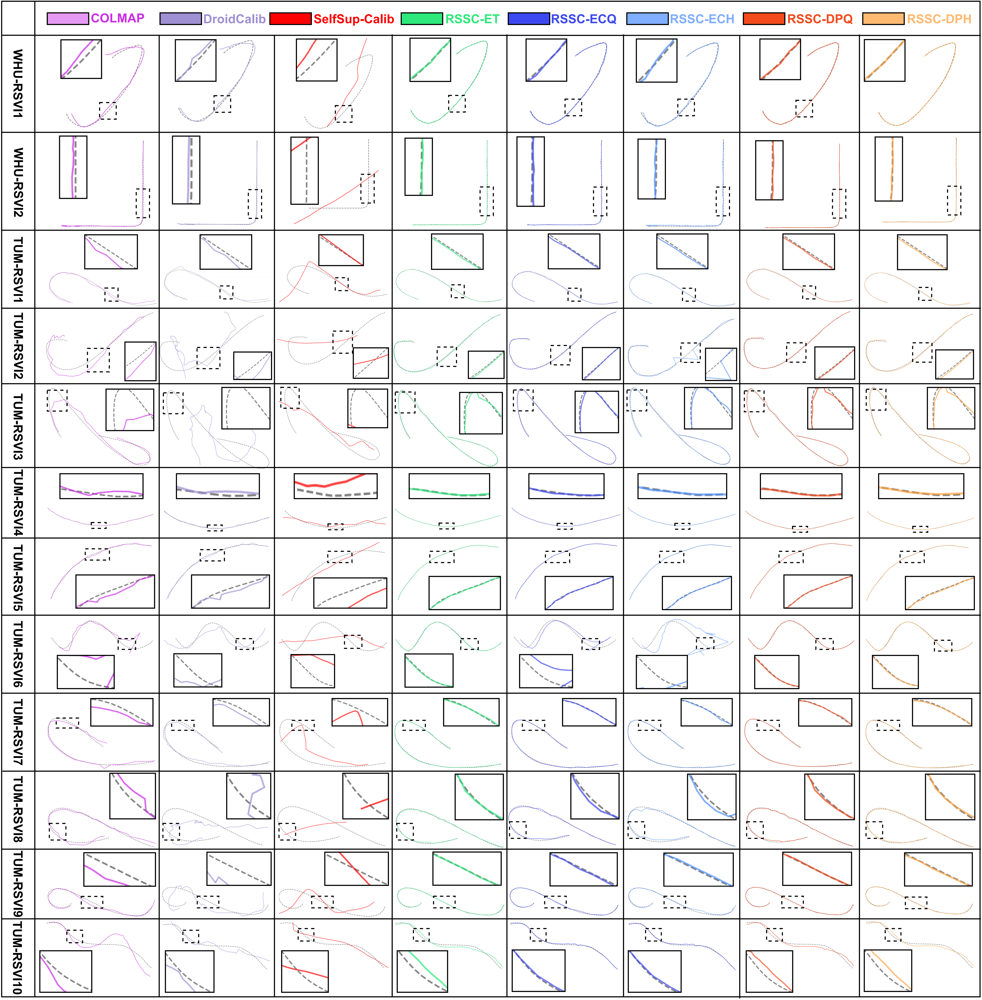
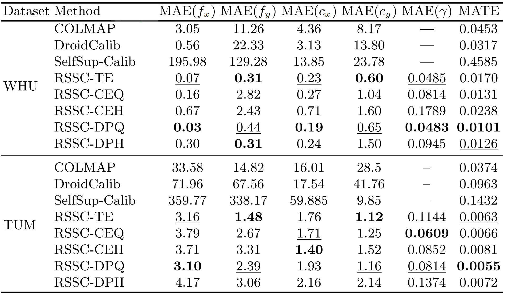

Abstract
Rolling shutter (RS) cameras are widely used in consumer devices, but their row-wise exposure causes distortions under motion, making geometric 3D vision problems dependent on both camera intrinsics and readout time ratio. Existing RS calibration methods rely on calibration targets or specialised hardware, limiting their use in unconstrained settings. We present the first self-calibration method for RS cameras that directly estimates camera intrinsics and the readout time ratio from image sequences, without requiring calibration targets. The method is implemented as a self-calibrating bundle adjustment (BA), which critically depends on the RS imaging model. We combine two known complementary models. The first formulates RS imaging as continuous-time trajectory estimation under a row-wise pose representation. The second interprets RS images as temporally distorted global shutter (GS) images and requires to estimate correction fields. The combination is non-trivial and results in a unified dual-projection model, in which each 3D point is simultaneously constrained at both row-dependent and reference timestamps along a shared continuous trajectory, enforcing stronger geometric and temporal consistency. Extensive simulations analyse the applicability of several implementations under varying conditions, and real data experiments demonstrate the accuracy, robustness, and practical effectiveness of the proposed approach.
Methodology

(a) Two perspectives for modeling RS images. Left: the RS image is modeled as a composition of multiple independently captured single-row GS images; Right: the RS image is modeled as a single GS image with distortion. (b) The proposed dual-projection model projects each 3D point twice, onto its original RS 2D point and onto the rectified GS 2D point.

Two different fitting strategies: (a) Representing the camera trajectory as a function of γ. (b) Representing the 2D points as a function of γ.
Experiment Results

Trajectory comparison on the WHU-RSVI and TUM-RSVI datasets. Each row denotes a different trajectory sequence, while each column corresponds to a specific method. Selected local regions (highlighted by dashed boxes) are magnified and displayed within solid boxes for detailed inspection.

Self-calibration results on WHU-RSVI and TUM-RSVI datasets. All results are median absolute errors (MAE) of the intrinsic parameters and readout time ratio, and median absolute trajectory errors (MATE) over all sequences in each dataset.
BibTeX
@article{YourPaperKey2024,
title={Your Paper Title Here},
author={First Author and Second Author and Third Author},
journal={Conference/Journal Name},
year={2024},
url={https://your-domain.com/your-project-page}
}